Australian Police Arrest Two Alleged Darkweb Vendors
~2 min read | Published on 2022-05-18, tagged Darkweb-Vendor, Drug-Bust using 361 words.
Cybercrime investigators dismantled a darkweb drug trafficking operation and arrested two suspects.
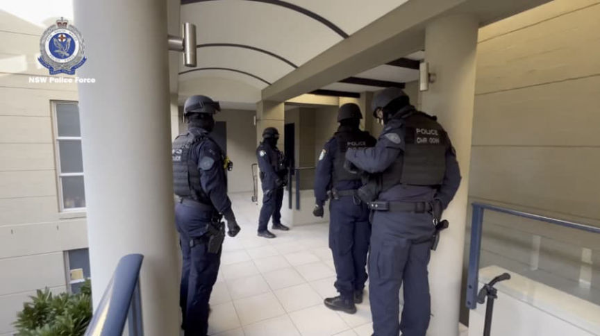
According to a press release from the NSW Police, investigators from the State Crime Command’s Cybercrime Squad launched an investigation into darkweb drug trafficking in Australia. Strike Force Glene identified a marketplace where users could exchange cryptocurrency for prohibited drugs and restricted substances.
Yesterday, on May 17, police executed three search warrants in Chatswood and Rose Bay. At the Chatswood address, police arrested a 33-year-old man. At the home in Rose Bay, police arrested a 39-year-old man. They also searched a business in Rose Bay.
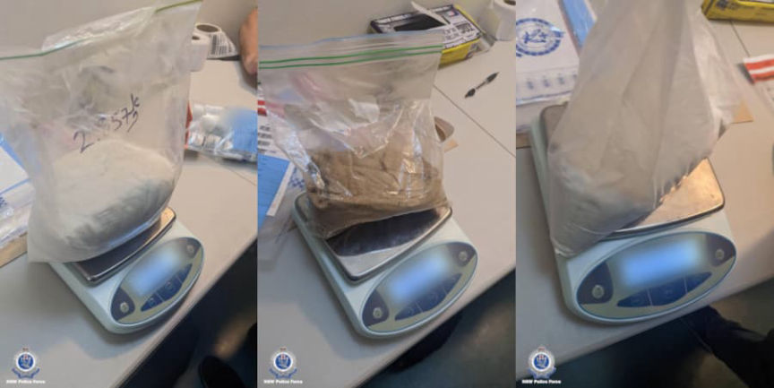
“In terms of scale, this operation sits as one of the more sophisticated we’ve seen with respect to both the quantity of illicit drugs being traded, right through to distribution and packaging,” Det Supt Craft said.
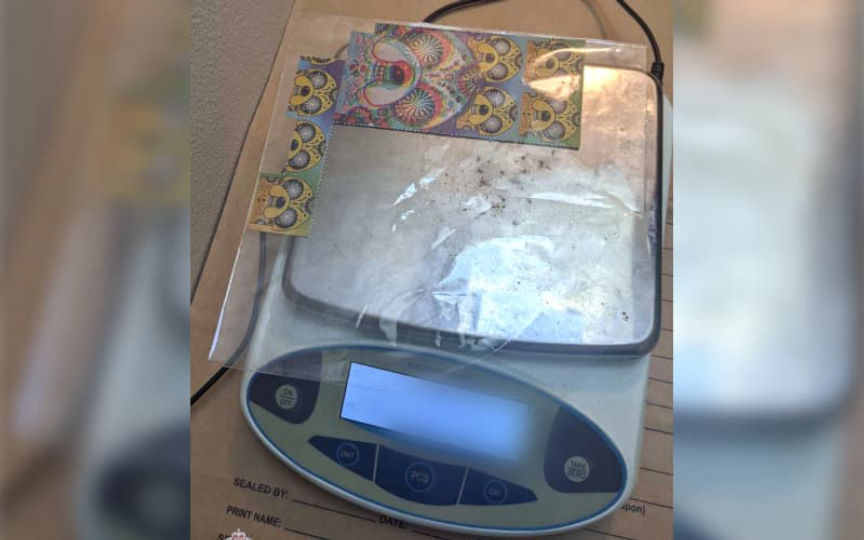
During the searches, investigators more than 100 grams of cocaine and MDMA, 3kg of unidentified powder, thousands of unidentified pills, and “17kg of confectionery, suspected to be laced with THC.” They additionally seized nearly $60,000 cash, an engagement ring worth approximately $100,000, mobile phones, computers, electronic storage devices, and cryptocurrency.
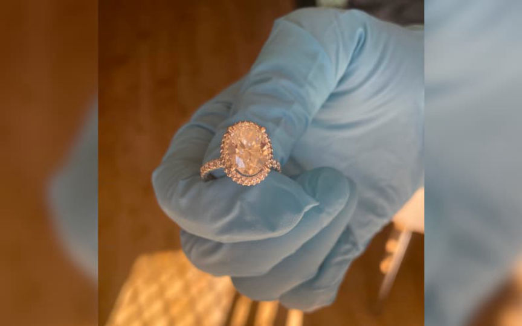
The suspects face charges for “supply prohibited drug, participate criminal group contribute criminal activity, supply prohibited drugs on an ongoing basis, and knowingly deal with proceeds of crime.” Since 2015, the suspects allegedly processed more than 30,000 drug transactions worth at least $1.16 million.<div class="aiq" itemscope="" itemtype="http://schema.org/ImageGallery">[img=][/img]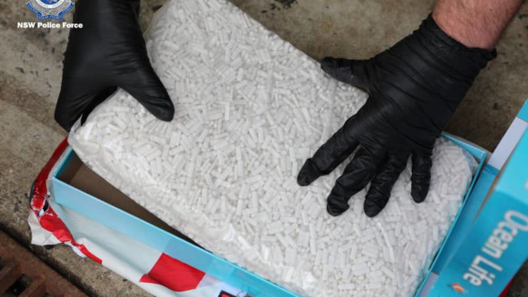
“We will be alleging the profits both these men were reaping as a result of these illicit trades were so vast, attempts were made to launder funds in cryptocurrency and cash using third parties. Those involved with this operation believed the dark web provided with them a cloak of invisibility and anonymity to conduct their illicit sales; their court appearance today says otherwise,” Det Supt Craft said.
Sophisticated ‘dark web’ drug supply syndicate dismantled - Cybercrime Squad - arcive.is, archive.org, police.nsw.gov.au
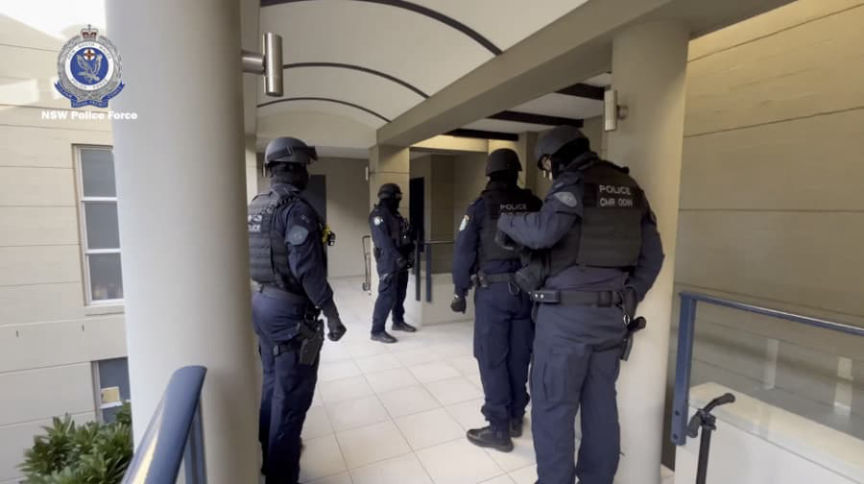
Australian police always seem to have suspiciously thin back plates
According to a press release from the NSW Police, investigators from the State Crime Command’s Cybercrime Squad launched an investigation into darkweb drug trafficking in Australia. Strike Force Glene identified a marketplace where users could exchange cryptocurrency for prohibited drugs and restricted substances.
Yesterday, on May 17, police executed three search warrants in Chatswood and Rose Bay. At the Chatswood address, police arrested a 33-year-old man. At the home in Rose Bay, police arrested a 39-year-old man. They also searched a business in Rose Bay.
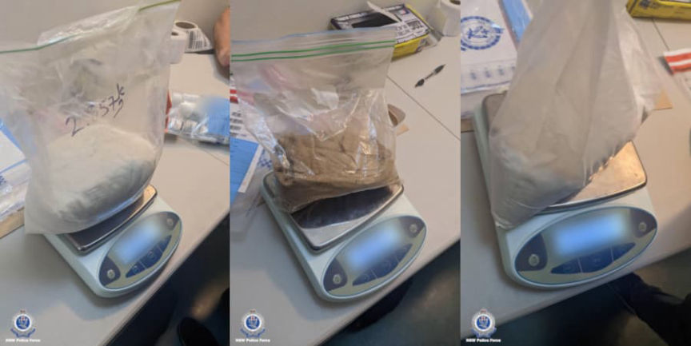
Three bags of powder seized during the raids
“In terms of scale, this operation sits as one of the more sophisticated we’ve seen with respect to both the quantity of illicit drugs being traded, right through to distribution and packaging,” Det Supt Craft said.
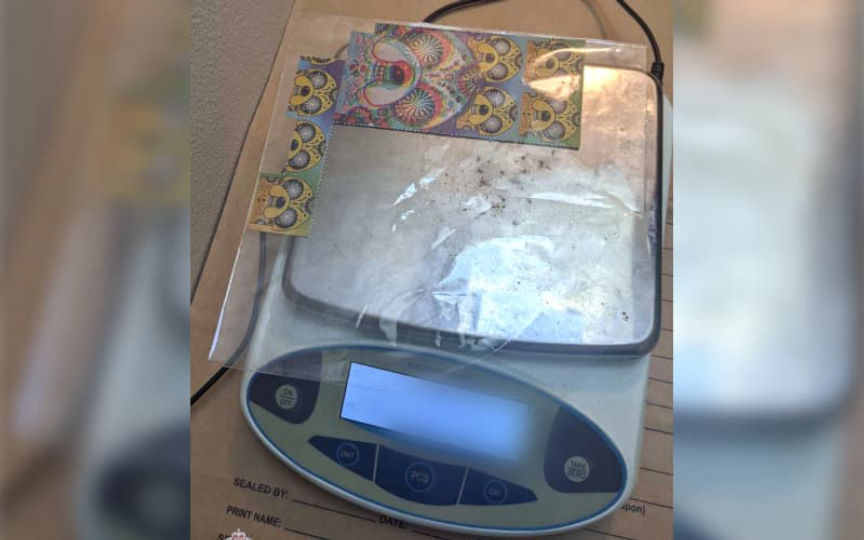
A picture of what appears to be blotter of some sort
During the searches, investigators more than 100 grams of cocaine and MDMA, 3kg of unidentified powder, thousands of unidentified pills, and “17kg of confectionery, suspected to be laced with THC.” They additionally seized nearly $60,000 cash, an engagement ring worth approximately $100,000, mobile phones, computers, electronic storage devices, and cryptocurrency.
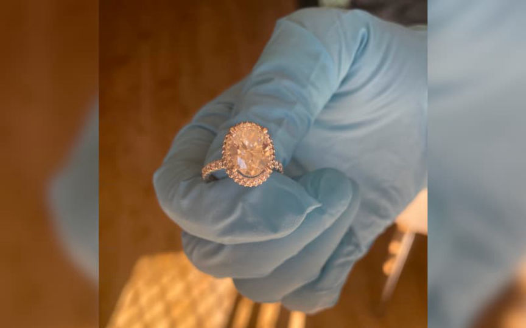
A ring police believe was purchased with the proceeds of crime
The suspects face charges for “supply prohibited drug, participate criminal group contribute criminal activity, supply prohibited drugs on an ongoing basis, and knowingly deal with proceeds of crime.” Since 2015, the suspects allegedly processed more than 30,000 drug transactions worth at least $1.16 million.<div class="aiq" itemscope="" itemtype="http://schema.org/ImageGallery">[img=][/img]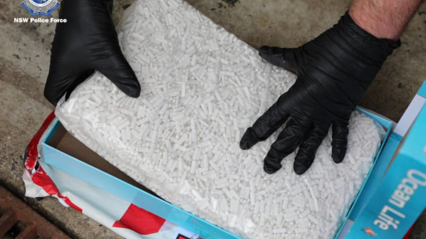
[/img]<figcaption itemprop="caption description">A bag of pills seized during the raid<span itemprop="copyrightHolder"></span></figcaption>[img=][/img][/img]<figcaption itemprop="caption description">The ring police will lose in the near future.<span itemprop="copyrightHolder"></span></figcaption>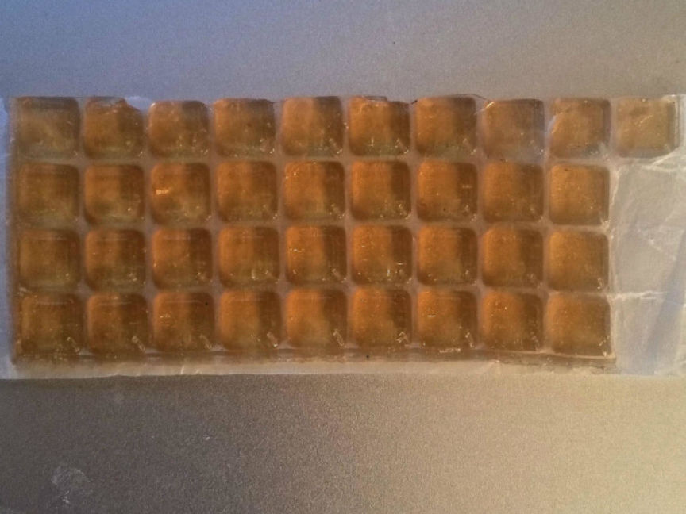
“We will be alleging the profits both these men were reaping as a result of these illicit trades were so vast, attempts were made to launder funds in cryptocurrency and cash using third parties. Those involved with this operation believed the dark web provided with them a cloak of invisibility and anonymity to conduct their illicit sales; their court appearance today says otherwise,” Det Supt Craft said.
Sophisticated ‘dark web’ drug supply syndicate dismantled - Cybercrime Squad - arcive.is, archive.org, police.nsw.gov.au